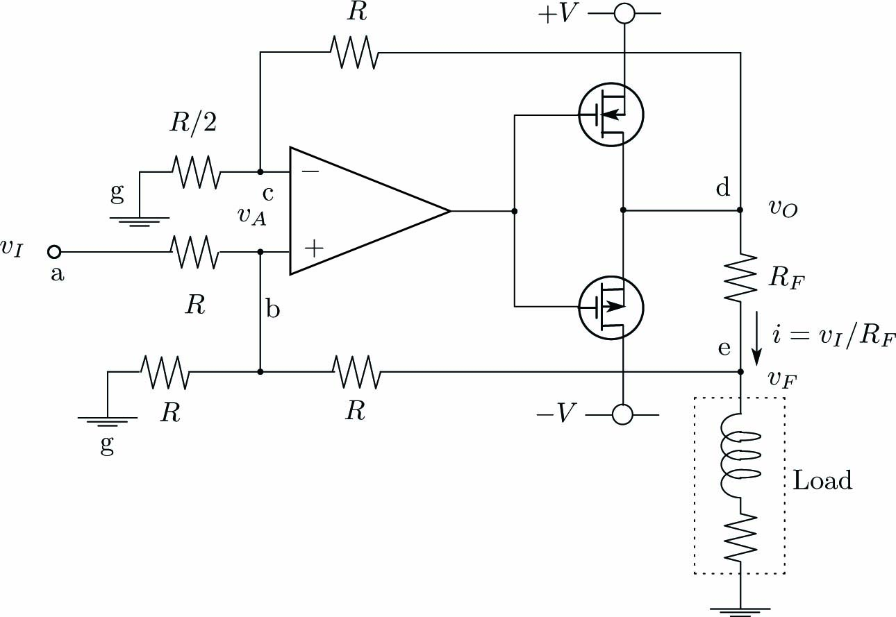

パワー出力ボードの写真です。

電解効果トランジスタ(MOS FET)を使った電流増幅回路は下図となります。
オペアンプの入力インピーダンスは無限大、入力(+)と出力(-)の電位差は0V(バーチャルショート)とします。
回路図の接点g-c間を流れる電流\(i_{gc}\)と接点c-d間を流れる電流\(i_{cd}\)は等しくなります。 オペアンプの入力接点bcの電位を\(v_A\)、接点dの電位を\(v_O\)としてします。
\begin{align} -\frac{v_A}{R/2}=\frac{v_A-v_O}{R}\label{eq:Form1} \end{align}
回路図の接点a-b間を流れる電流\(i_{gc}\)と接点b-e間を流れる電流\(i_{be}\)の和は 接点a-b間を流れる電流\(i_{bg}\)と等しくなります。接点eの電位を\(v_F\)としてします。
\begin{align} \frac{v_I-v_A}{R}+\frac{v_F-v_A}{R}=\frac{v_A}{R}\label{eq:Form2} \end{align}
回路図の接点d-e間を流れる電流\(i\)とします。
\begin{align} i=\frac{v_O-v_F}{R_F}\label{eq:Form3} \end{align}
式\eqref{eq:Form1}、\eqref{eq:Form2}、\eqref{eq:Form3}から次式が得られます。
\begin{align} \left. \begin{array}{@{\,}c} v_O=3v_A\\ v_I+v_F=3v_A\\ v_F=R_Fi \end{array} \right\} \label{eq:Form4} \end{align}
式\eqref{eq:Form4}から次式が得られます。
\begin{align} i=\frac{v_I}{R_F}\label{eq:Form5} \end{align}パワー出力ボードでは\(R=10k\Omega\)、\(R_F=1\Omega\)(セメント抵抗)としています。